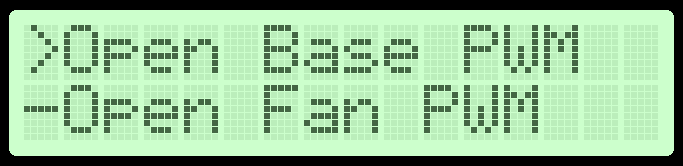

Caro Sr. Proprietário Muito obrigado por instalar o aparelho NeRD-AETTUA de carregamento de baterias de chumbo. A sua escolha acertada garantir-lhe-á bons desempenhos e assistência técnica para tornar a sua vida confortável e agradável.
No interior, encontrará muitos conselhos úteis sobre a utilização e manutenção do seu aparelho de ar condicionado. A realização de pequenos cuidados de prevenção da sua parte poderá poupar-lhe tempo e dinheiro durante o período de vida útil do seu aparelho de ar condicionado. Encontrará respostas para os problemas mais comuns na tabela de resolução de problemas. A consulta da nossa tabela de Conselhos de Resolução de Problemas poderá ser suficiente para não ter de recorrer aos serviços de assistência técnica.
Para prevenir ferimentos no utilizador ou noutras pessoas e danos de propriedade, deverá seguir as seguintes instruções
Uma utilização incorrecta por ignorar as instruções provocará ferimentos ou danos. A gravidade é classificada pelas indicações seguintes.
| AVISO | Este símbolo indica a possibilidade de morte ou de lesões graves. |
| CUIDADO | Este símbolo indica a possibilidade de ferimentos e danos de propriedade. |
Desaconselhamos fortemente o uso de um adaptador devido aos riscos potenciais. Para ligações temporárias, use apenas um adaptador listado UL, disponível na maior parte das lojas de material eléctrico. Certifique-se de que a ranhura grande do adaptador está alinhada com a ranhura grande do receptáculo para uma ligação com a polaridade correcta. Para desligar o cabo eléctrico do adaptador, use uma mão em cada um, para evitar danificar o terminal de terra. Evite desligar com frequência o cabo eléctrico, o que pode causar eventuais danos no terminal de terra.
Desaconselhamos fortemente o uso de uma extensão, para evitar potenciais riscos. Para situações temporárias, use apenas cabos de extensão com certificação CSA e UL, com 3 fios e ligados à terra, com 15 A, 250 V.
| Ecrã | Descrição | |
|---|---|---|
| 1 | Ligue a bateria aos terminais adequados. Navegue até ao menu à esquerda. Confirme a seleção primindo 'Ok'. |
|
| 2 | É-lhe apresentada uma estimativa da carga actual. Saia primindo 'Ok' ou 'Cancel'. |
| Ecrã | Descrição | |
|---|---|---|
| 1 | Navegue até ao menu à esquerda. Confirme a seleção primindo 'Ok'. |
|
| 2 | É-lhe apresentada a corrente actualmente a ser fornecida pela fonte. Prima '+' para passar ao próximo sensor. |
|
| 3 | É-lhe apresentada a tensão actualmente presente entre os terminais 'Charge' e 'GND'. Prima '+' para passar ao próximo sensor. |
|
| 4 | É-lhe apresentada a tensão actualmente presente entre os terminais 'Probe' e 'GND'. Prima '+' para passar ao próximo sensor. |
|
| 5 | É-lhe apresentada a temperatura actual dentro do carregador. Prima '+' para passar ao próximo sensor. |
|
| 6 | É-lhe apresentada a temperatura actual na sonda externa. |
| Ecrã | Descrição | |
|---|---|---|
| 1 | Ligue a bateria aos terminais adequados. Navegue até ao menu à esquerda primindo '+' duas vezes. Confirme a seleção primindo 'Ok'. |
|
| 2 | Escolha o plano adequado primindo '+' e '-'. Confirme a seleção primindo 'Ok'. |
|
| 3 | Introduza o número de células da bateria. Confirme a introdução primindo 'Ok'. |
|
| 4 | Introduza a capacidade bateria. Confirme a introdução primindo 'Ok'. |
|
| 5 | Confirme primindo 'Ok'. |
|
| 6 | A carga começa. Pode premir 'Cancel' para interruper a carga. |
| Ecrã | Descrição | |
|---|---|---|
| 1 | Ligue a bateria aos terminais adequados. Navegue até ao menu à esquerda. Confirme a seleção primindo 'Ok'. |
|
| 2 | Introduza a quantidade de corrente máxima a que se pode efetua a discarga. Confirme a introdução 'Ok'. Começa a descarga. |
| Ecrã | Descrição | |
|---|---|---|
| 1 | Navegue até ao menu à esquerda. Confirme a seleção primindo 'Ok'. |
|
| 2 |  | Escolha o tipo de saída desejada, premindo '+' e '-'. Confirme a seleção 'Ok'. |
| 3 | Introduza o valor desejado. Confirme a introdução 'Ok'. A saída é atuada. |